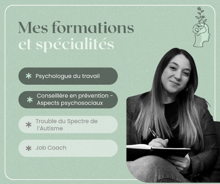
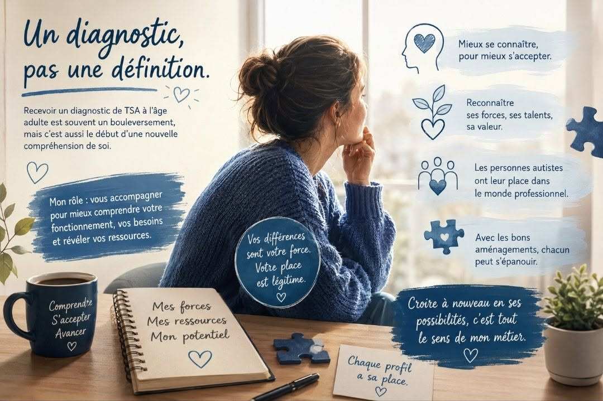
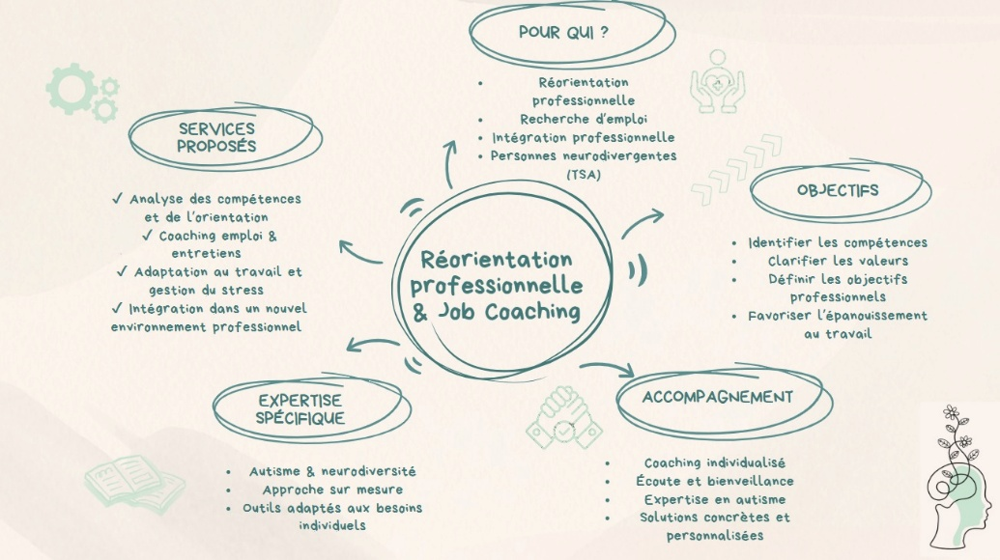

Stress & surcharge mentale
Identifier les facteurs de tension, mieux comprendre leurs effets et retrouver des repères plus soutenables.
Psychologue du travail · Manage
Erika Casa accompagne les personnes confrontées à des difficultés psychologiques liées au travail, ainsi que celles qui souhaitent réfléchir à leur avenir ou à une réorientation professionnelle.
Psychologue du travail
Un espace d’écoute bienveillante et confidentielle pour faire le point, comprendre ce qui se joue dans votre situation professionnelle et avancer à votre rythme.
Accompagnements
Les accompagnements sont personnalisés en fonction de votre situation, de vos besoins et de votre parcours.
Identifier les facteurs de tension, mieux comprendre leurs effets et retrouver des repères plus soutenables.
Mettre des mots sur l’épuisement, reconnaître les signaux d’alerte et être accompagné dans la reconstruction d’un équilibre.
Faire le point sur son parcours, clarifier ses priorités et réfléchir à une évolution professionnelle qui a davantage de sens.
Comprendre les difficultés rencontrées dans l’environnement professionnel et identifier des pistes d’ajustement adaptées.
À propos
Erika Casa est diplômée d’un Master en Psychologie du travail à l’Université de Mons et d’un Master en Gestion des risques et du bien-être au travail à l’ULB.
Elle accompagne les personnes confrontées à des difficultés psychologiques liées à leur environnement professionnel, notamment autour de la gestion du stress, de la prévention du burnout et de la surcharge mentale.

Articles & ressources
Erika Casa partage ici des contenus autour de la psychologie du travail, du burnout, de l’orientation professionnelle, de l’autisme et de l’inclusion.

L’autisme est un trouble du neurodéveloppement qui influence la manière de communiquer, d’interagir et de percevoir le monde. Il est différent pour chaque personne et souvent invisible.
Lire l’article →
Recevoir un diagnostic d’autisme à l’âge adulte peut bouleverser la manière de se comprendre. Un accompagnement peut aider à identifier ses besoins, ses ressources et ses forces.
Lire l’article →
Fatigue intense, perte d’énergie, démotivation : comment reconnaître les signaux d’alerte ?
Lire l’article →
Réorientation, transitions et recherche d’un meilleur équilibre dans son parcours.
Lire l’article →Contact
Contactez Erika Casa pour échanger sur votre demande et convenir d’un rendez-vous.
Téléphone
+32 472 37 67 85
Cabinet
Grand’Rue 56
7170 Manage